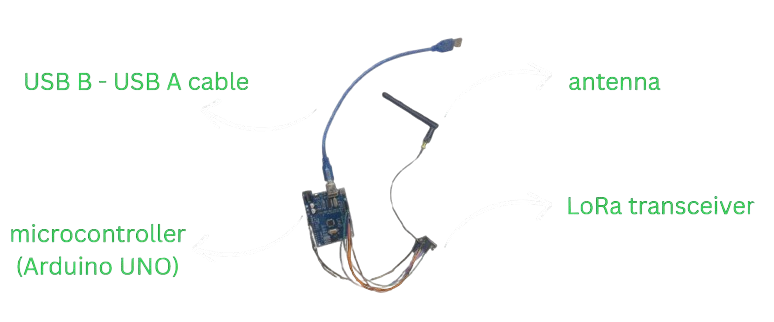
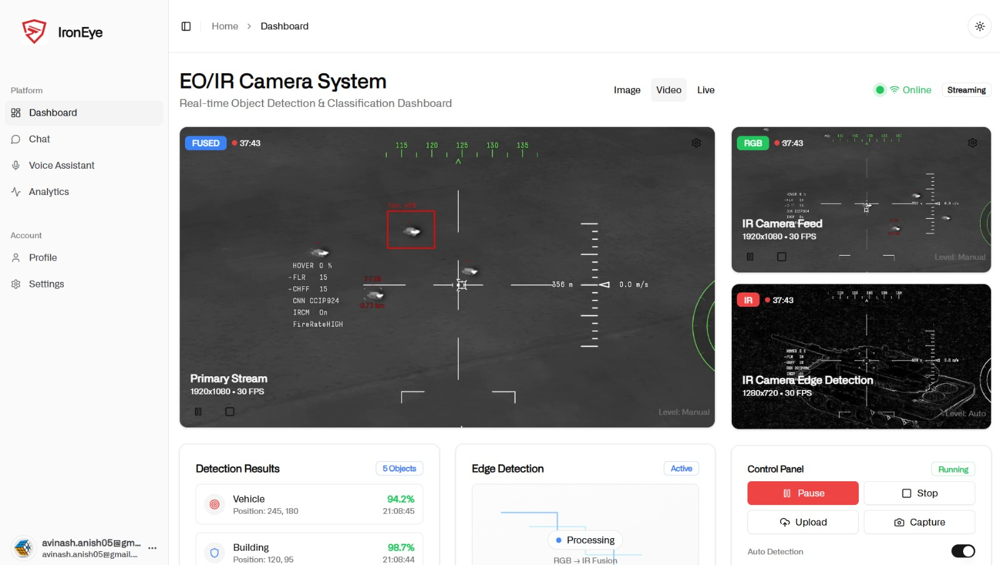
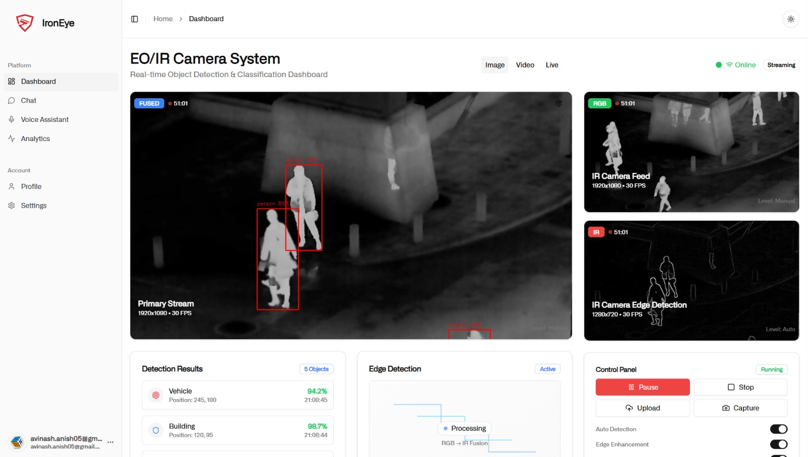

Projects


-
▶ darkwire -Send bitcoin without the internet over LoRa radio mesh networks↗ darkwire
An open source framework to send bitcoin without the internet over LoRa (long range) radio mesh networks.
Decrypt article

-
▶ ironeye -AI powered air to surface auto targeting system↗ ironeye
A multi-modal AI system for auto targeting and NLP based control of agents (military aircrafts) simulated in War Thunder. Won 3rd place at HAL Aerothon 2025.
Kaggle dataset


-
▶ cybergrad -A toy autograd library built from scratch using cupy for GPU support↗ cybergrad
A simple autograd library implemented from scratch using cupy instead of numpy for GPU processing. Written to get a more fundamental understanding of autograd. -
▶ chat-with-jfk-files -Chat with 2,300+ declassified JFK assassination documents↗ chat-with-jfk-files
Web app to search and chat with the 2025 JFK file release. Built with ChromaDB, Python, and HTMX. -
▶ tinyrag -Lightweight plug-and-play RAG framework for Ollama-based LLMs↗ tinyrag
A minimal RAG framework designed to integrate with various LLM endpoints with minimal complexity. -
▶ TheOmniscientOne -Chat with your own data across PDFs, docs, images and YouTube transcripts↗ TheOmniscientOne
One of my early attempts to make LLMs multi-modal -uses GPT-3.5 Turbo and Llama Index to query custom data across PDFs, docs, images and YouTube transcripts via natural language. -
▶ Delamain -Teaching a car to drive using linear regression on gameplay screenshots↗ Delamain
A weekend project inspired by Navlab -captures gameplay screenshots mapped to keyboard inputs and uses linear regression to autonomously control a vehicle. -
▶ NanoGPT-Kannada - GPT-2 trained on TinyBasavanna, a custom Kannada dataset↗ NanoGPT-Kannada
Trained NanoGPT on TinyBasavanna, a custom Kannada dataset I made, demonstrating transformer architecture works equally well with non-ASCII scripts. -
▶ ICE -Intrusion Countermeasures Electronics: server hardening toolkit↗ ICE
A collection of hardening scripts and firmware for servers and networks, including passive defences and honeypots. -
▶ MNIST-CNN -CNN in PyTorch achieving 99.40% on MNIST↗ MNIST-CNN
Three convolutional layers with dropout regularization trained over 10 epochs on the MNIST handwritten digits dataset. -
▶ silverhand -Cybernetic arm using piezoelectric sensors and servo control↗ silverhand
Prosthetic arm prototype built in C++ mapping piezoelectric sensor input to servo angles, with plans for a hydraulic-based second version. -
▶ eyePGP - Generate cryptographic keys from iris biometric data↗ eyePGP
A biometric authentication system that deterministically generates Ed25519 key pairs from iris patterns, exporting PGP-compatible keys without ever storing them. -
▶ wikitok - Scrollable Wikipedia↗ wikitok
Wikipedia reimagined as an infinite scroll feed, making knowledge discovery more engaging. - This page is a work in progress.
Listening to
not playing anything rn
Links
Site navigation
Buttons


My button
If you liked my site, add my button =]
Banners
Use Temple OS

Listen to Aphex Twin

Play Cyberpunk 2077
"An idiot admires complexity, a genius admires simplicity"
— Terry A Davis